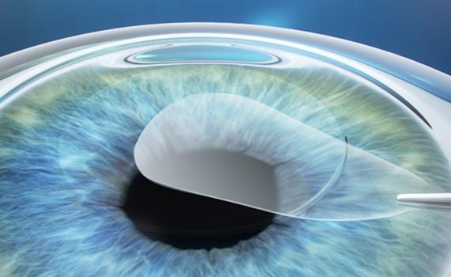

Nyheder & Inspiration
Ny forskning og teknologi

Nye laseroperationer i Asien
Ny generation af præcisionslaser giver hurtigere heling og bedre resultater. Læs mere om teknologien.
Læs artikelElektronmikroskop afslører ultra-fine øjenstrukturer
Forskere kortlægger øjets celler med hidtil uset detaljegrad. Potentiel for nye behandlinger.
Læs artikelKundehistorier
Hvordan Anne fandt sit perfekte par
Fra frustration til glæde: Annes rejse gennem flere prøver til det ideelle stel.
Læs historienHistorie om optik
De første briller – fra middelalderen til i dag
En rejse gennem 700 år af innovation fra klosterbriller til moderne progressivglas.
Læs mere